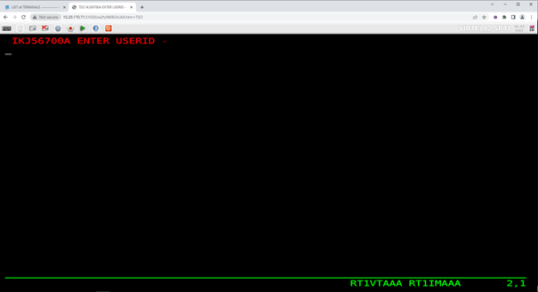
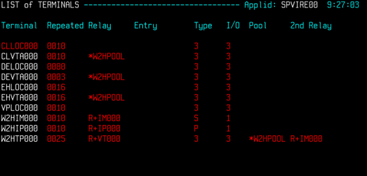

Running multiple instances of Virtel
Introduction
The ability to run multiple instances of Virtel across a mainframe platform provides the reliability, availability and serviceability (RAS) components that today’s software demands. Virtel exploits the IBM z/OS platform to achieve High Availability and Load Balancing across the Virtel instances that are running in a client environment. Virtel can be installed in multiple instances and provide a single access point. This can be as several instances running on one LPAR, known as a Multiplex installation, or across several LPARS, known as a Virplex. Also, Virtel can be front ended by an external reverse proxy server. This server will deal with load balancing across the Virtel instances and maintaining a single point of entry. This newsletter discusses the issues raised when implementing these multi-instance scenarios. the different setups required and how Virtel exploits the IBM technologies to achieve the desired results.
In the following example we look at three Virtel scenarios: -
XVTAM Using VTAM Generic Resources to access 3270 applications
MultiSys Running multiple Virtel instances on one LPAR using QLNK definitions.
Virplex Running multiple Virtel instances using IBM’s Sysplex Distributor.
XServer Using an external reverse proxy server to access multiply instances.
In each case, the user access is through a single point of entry using one port. ARBO and TRSF files can be shared across the Virtel instances if required. A separate Administration Virtel is normally used to maintain the Virtel environment.
XVTAM Example

Fig 1 - Using VTAM Generic Resources
Virtel is using several Sysplex technologies to achieve this configuration. For example, Virtel is using VTAM Generic Resources to facilitate access to the Virtel Administration functions from either instance of Virtel. VTAM generic resources can be used to distribute workloads across applications that perform the same task or function. Administration of the ARBO file is through the Virtel Administrator who can logon on to Virtel using the generic Virtel ACB name VIRTPLEX. This generic ACB enables management of the ARBO file through either VIRTEL1A or VIRTEL2A. This can be useful, for example, If SYSA was down for maintenance. VIRTEL administration could still conducted via VIRTEL2A access. No change would be necessary to any session management tools.
Here are the relevant definitions required to support the VTAM generic resource within Virtel.
VIRTEL TCT
GRNAME=VIRTPLEX, VTAM GENERIC RESOURCE NAME
SYSPLEX definitions
The ISTGENERIC structure will have to be allocated before you can use VTAM generic resources. See the IBM Network Implementation Guide for further information on configuring the CFRM. Use the following command to display coupling allocation details for ISTGENERIC.
D XCF,STR,STRNM=ISTGENERIC
VTAM display of the generic resource The results from the D NET,ID=VTAMPLEX,E identifies the two Virtel instances which are grouped into the generic resource name VIRTPLEX. The example below shows VIRTEL1A and VIRTEL2A as participating in the VIRTRPLEX resource name group.
D NET,ID=VIRTPLEX,E
IST097I DISPLAY ACCEPTED
IST075I NAME = VIRTPLEX, TYPE = GENERIC RESOURCE 917
IST1359I MEMBER NAME OWNING CP SELECTABLE APPC
IST1360I SPNET.VIRTEL1A ZAM1SSCP YES NO
IST1360I SPNET.VIRTEL2A ZAM2SSCP YES NO
IST2210I GR PREFERENCE TABLE ENTRY = **DEFAULT**
IST2202I GREXIT = NO WLM = YES LOCLU = YES
IST2204I LOCAPPL = YES PASSOLU = NO
IST314I END
When the VIRTEL*A application is display in VTAM the following messages are written to the console log:-
D NET,ID=VIRTEL1A,E
IST097I DISPLAY ACCEPTED
IST075I NAME = SPNET.VIRTEL1A, TYPE = APPL 925
IST486I STATUS= ACT/S, DESIRED STATE= ACTIV
IST1447I REGISTRATION TYPE = CDSERVR
IST1363I GENERIC RESOURCE NAME VIRTPLEX REPRESENTS SPNET.VIRTEL1A
IST977I MDLTAB=***NA*** ASLTAB=***NA***
IST861I MODETAB=***NA*** USSTAB=***NA*** LOGTAB=***NA***
IST934I DLOGMOD=***NA*** USS LANGTAB=***NA***
IST1632I VPACING = 7
IST1938I APPC = NO
IST597I CAPABILITY-PLU ENABLED ,SLU ENABLED ,SESSION LIMIT NONE
IST231I APPL MAJOR NODE = APPLVIPX
IST654I I/O TRACE = OFF, BUFFER TRACE = OFF
IST1500I STATE TRACE = OFF
IST271I JOBNAME = SPVIR1A, STEPNAME = SPVIR1A, DSPNAME = ISTEBBDB
IST228I ENCRYPTION = OPTIONAL , TYPE = DES
IST1563I CKEYNAME = VIRTEL1A CKEY = PRIMARY CERTIFY = NO
IST1552I MAC = NONE MACTYPE = NONE
IST1050I MAXIMUM COMPRESSION LEVEL - INPUT = 0, OUTPUT = 0
IST1633I ASRCVLM = 1000000
IST1634I DATA SPACE USAGE: CURRENT = 0 MAXIMUM = 1280
IST171I ACTIVE SESSIONS = 0000000001, SESSION REQUESTS = 0000000000
IST206I SESSIONS:
IST634I NAME STATUS SID SEND RECV VR TP NETID
IST635I SC0TCP13 ACTIV-S CA7B8B52D125F31F 0003 0001 SPNET
IST314I END
Message IST1363I confirms that VIRTEL operating under the ACB of VIRTEL1A is associated with the VTAM resource name VIRTPLEX. Using Virtel and VTAM Generic Resource Names to balance workload in a SYSPLEX environment. In the following configuration we can see how the VTAM generic resource facility can also be used to distribute workloads across applications. In this example there are several CICS TOR regions within CICSA, CICSB and CICSC that are accessed through a VTAM generic resource name or CICSPLEX group name. VIRTEL uses this name to access the CICS application. The WLM and/or VTAM will distribute sessions across the members of the CICS generic resource name.

Fig 2 - Using VTAM Generic resources to balance workload
From a High Availability aspect both CICSA and CICSB could both be down and service would still be provided by CICSC either through VIRTEL1A or VIRTEL2A. In this configuration VIRTEL exploits SYSPLEX technologies to provide a HA solution. The only VIRTEL requirement is to define a VIRTEL transaction which targets CICSZ as the VTAM application, i.e. the VTAM Generic Resource or CICSPLEX group name.
MultiSys Example using QLNK
In this scenario we run three instances of Virtel on the same LPAR to front end 3270 applications like TSO and CICS. The IBM TCPIP SHARED PORT feature is utilized to provide a single access point to all three Virtel instances. In this case PORT 31020. An Administration of Virtel is run as an administration instance. The administration instance has read write access to the shared files.

Fig 3 – MultiSys Example using 1 LPAR
The Virtel instances communicate through internal QLNK paths. This internal communication provides session affinity across the Virtel instances. The shared IBM TCPIP PORT provides a single point of entry and load balancing, either RoundRobin or WLM, across the Virtel User instances. The shared port is configured within TCPIP using an obey file. An example is provide below : -
;VARY TCPIP,,O,SPTHOLT.VIRMULTI.CNTL(OBPROF00)
DELETE PORT 31020 TCP SPVIREH0
DELETE PORT 31020 TCP SPVIREH1
DELETE PORT 31020 TCP SPVIREH2
PORT
; VIRPLEX Range
31020 TCP SPVIREH0 SHAREPORT ; Virtel Portshare
31020 TCP SPVIREH1 ; Virtel Portshare
31020 TCP SPVIREH2 ; Virtel Portshare
Virtel naming conventions with multiple tasks on the same LPAR
The Administration instance, SPVIREH9, can be used to examine the line and terminal definitions that support this scenario. The display the terminals for V-HTTP looks like: -
Fig 6 – MultiSys Terminal display
A Virtel pool is defined as *VPXPOOL supporting 10 internal relays beginning VPVTA000. The terminals that associated with this pool are defined using the sysclone plus ‘+’ character as the second and third digit and any alphanumeric character as the last three digits. Logging on to TSO a session is generated with the following terminal assignments: -

Fig 7 – MultiSys terminal allocation
VTAM terminal RT1VTAAA and VTAM printer RT1IMAAA are used from the Virtel pool in setting up the session.
In the Virtel log for SPVIREH2, the allocated instance to support this session, we see the following session setup messages from Virtel SPVIREH2: -
18.57.43 JOB04765 VIRT906I HTTP-VPX SOCKET 00030000 CALL FROM 10.20.92.20:63394
18.57.43 JOB04765 VIRHT51I HTTP-VPX CONNECTING VPLOC079 TO 10.20.92.20:63394
18.57.43 JOB04765 VIRC121E PAGE NOT FOUND FOR VPLOC079 CALLER 10.20.92.20 427
427 ENTRY POINT 'VPXWHOST' DIRECTORY 'VPXWHOST'(VPX-DIR VPX-KEY )
427 PAGE : 'FAVICON.ICO' URL : '/favicon.ico'
18.57.43 JOB04765 VIR0052I VPLOC079 DISCONNECTED AFTER 0 MINUTES
18.57.52 JOB04765 VIRHT51I HTTP-VPX CONNECTING VPLOC079 TO 10.20.92.20:63394
18.57.52 JOB04765 VIR0052I VPLOC079 DISCONNECTED AFTER 0 MINUTES
18.57.54 JOB04765 VIRHT51I HTTP-VPX CONNECTING VPVTA009 TO 10.20.92.20:63394
18.57.54 JOB04765 VIR0919I VPVTA009 RELAY RT1VTAAA(VPXTP000) ACTIVATED
18.57.54 JOB04765 VIR0919I VPVTA009 RELAY RT1IMAAA(VPXIM000) ACTIVATED
18.57.54 JOB04765 VIRHT51I HTTP-VPX CONNECTING VPVTA008 TO 10.20.92.20:63394
T1 is the sysclone value substituted into the terminal name and AAA is the suffix derived from the <<< string. The sysclone value is taken from the system &SYSCLONE definitions.
NC0000000 SPT1 23182 19:01:29.76 SPTHOLT 00000290 D SYMBOLS
MR0000000 SPT1 23182 19:01:29.79 SPTHOLT 00000090 IEA007I STATIC SYSTEM SYMBOL VALUES 468
DR 468 00000090 &SYSALVL. = "2"
DR 468 00000090 &SYSCLONE. = "T1"
DR 468 00000090 &SYSNAME. = "SPT1"
Using the plus(+) feature of Virtel enables the porting of “common” definitions to different LPARS whereby the sysclone would make the definitions unique to that LPAR. This avoids VTAM conflicts when assigning sessions. The VTAM definitions for this scenario look like: -
* ------------------------------------------------------------------ *
* VIRPLEX : VIRTELnn ACB Definitions. Match to LINE Names *
* ------------------------------------------------------------------ *
VIRTEL?? APPL EAS=160,AUTH=(ACQ,BLOCK,PASS,SPO)
R&SYSCLONE.VT??? APPL AUTH=(ACQ,PASS),MODETAB=ISTINCLM, X
DLOGMOD=SNX32702,EAS=1
R&SYSCLONE.IM??? APPL AUTH=(ACQ,PASS),MODETAB=ISTINCLM,DLOGMOD=SCS, X
EAS=1
To use the sysplus(+) coding with the Virtel definitions the TCT must be defined with : -
SYSPLUS=YES, SYSPLEX SUPPORTED
VirPlex Example using Sysplex Distributor
Using a Dynamic VIPA with IBM’s SYSPLEX Distributor (SD) you can balance Virtel session workload across more than one LPAR. In this scenario we run Virtel instances on separate LPARS and use SD to balance the incoming workload.

Fig 8 – Virplex using Sysplex distributor
The distributing TCPIP stack will balance workload across the participating target TCPIP stacks. Allocation of new sessions on the IP side will depend on the selected SD algorithm. For example, this can be a Round Robin policy or WLM policy workload algorithm. Central point of access is through using distributed VIPA address which is defined in a TCPIP profile. In the configuration above it is defined as 10.20.190.15. The relevant PROFILE definitions for TCPIP would look like: -
VIPADYNAMIC
VIPARANGE DEFINE MOVEABLE NONDISRUPTIVE 255.255.255.0 10.20.170.20
VIPADEFINE MOVE IMMED 255.255.255.0 10.20.170.15
VIPADISTRIBUTE DEFINE TIMEDAFF 300 DISTMETHOD ROUNDROBIN 10.20.170.15
DESTIP ALL
ENDVIPADYNAMIC
It is essential to include the TIMEDAFF parameter in the VIPA definition as this maintains session affinity. The TIMEDAFF facility ensures that a user will always connect to the same VIRTEL while a session is open. Also, it is recommended that the Virtel line W-HTTP (port 41001) is used for Virtel Administration and a shared port is used to access to applications.
Line W-HTTP should be defined using the base address of the LPAR (i.e. the home address of the default interface) by specifying only the port number. For example:
Local address ==> :41001
Line V-HTTP, the common access point, should be defined in the ARNBO using the distributed VIPA address with port number:
Local address ==> 10.20.170.15:31020
The Virtel Line display command displays this configuration:
F SPVIREH0,LINES
VIR0200I LINES
VIR0201I VIRTEL 4.62 APPLID=VIRTEL00 LINES
VIR0202I ALLOCATED IP ADDRESS = 10.20.170.83 < Local IP address
VIR0202I INT.NAME EXT.NAME TYPE ACB OR IP
VIR0202I -------- -------- ----- ---------
VIR0202I W-HTTP *GATE
VIR0202I C-HTTP *GATE
VIR0202I D-HTTP HTTP-CLI TCP1 :41003
VIR0202I E-HTTP HTTP-CLI TCP1 :41123
VIR0202I L-HTTP HTTP-CLI TCP1 ÝFD10:15C1:1921:1000::129¨:41005
VIR0202I S-PLEX PLEX-SYS*XRC *NONE*
VIR0202I V-HTTP HTTP-VPX TCP1 10.20.190.15:31020 < Dynamic VIPA
VIR0202I X-HTTP HTTP-ESH TCP1 ÝFD10:15C1:1921:1000::129¨:41003
VIR0202I ---END OF LIST---
Virtel naming conventions with multiple tasks on different LPARS
When running more than one VIRTEL STC care must be taken when defining the VTAM relay names that each VIRTEL task will use. In some cases, terminals have to be grouped in order to provide the necessary installation standards to to meet a particular naming convention. When running Virtel instances on different LPARS, for the high availability (HA) reasons, and probably on a different physical machine, the VTAM names employed must be unique. With Virtel you can define a single configuration within the ARBO and TCT which contains a unique pool of Virtel relays for each Virtel instance. Here are two possible ways to define the relay pools for multiple Virtel instances:
The first way is to include the SYSCLONE value as part of the LU name. The relay definitions utilize the system symbolic SYSCLONE value in the IEASYMxx member of PARMLIB. The clone value is taken from the system symbolic &SYSCLONE and is identified in the VIRTEL definitions through the + (plus) character:
LIST of TERMINALS ---------------------------------- Applid: VIRTEL1A 15:11:01
Terminal Repeated Relay Entry Type I/O Pool 2nd Relay
CLLOC000 0050 3 3
CLVTA000 0080 *W2HPOOL 3 3
DELOC000 0010 3 3
DEVTA000 0016 *W2HPOOL 3 3
W2HIM000 0080 R+IM000 1 1
W2HTP000 0080 R+VT000 3 3 *W2HPOOL R+IM000
TCT definition
In the configuration above there are two Virtel STCs running on different LPARS whose &SYSCLONE values are 1A and 2A. With the same TCT being used for both VIRTEL1A and VIRTEL2A the following is specified in the common TCT:-
APPLID=VIRTEL+,
SYSPLUS=YES,
This will means that the two Virtels STCs will have a VTAM APPLID of VIRTEL1A and VIRTEL2A. The Virtel relay LU names are R1AVT000-079 for LPAR 1A, and R2AVT000-079 for LPAR 2A.
Note: It is recommended that only the ARBO file can be shared in this configuration.
The VTAM definition to support this configuration would like:-
APPLVIPX VBUILD TYPE=APPL
* ------------------------------------------------------------------ *
* Product : VIRTEL *
* Description : APPL for VIRTEL SYSPLEX (SPVIR1A and SPVIR2A) *
* ------------------------------------------------------------------ *
VIRTEL&SYSCLONE APPL EAS=160,AUTH=(ACQ,BLOCK,PASS,SPO), *
ACBNAME=VIRTEL&SYSCLONE
* ------------------------------------------------------------------ *
* R&SYSCLONEVTxxx : VTAM application relays for VIRTEL Web Access *
* ------------------------------------------------------------------ *
R&SYSCLONE.VT??? APPL AUTH=(ACQ,PASS),MODETAB=ISTINCLM, *
DLOGMOD=SNX32702,EAS=1
* ------------------------------------------------------------------ *
* R&SYSCLONEIMxxx : Printer relays for VIRTEL Web Access terminals *
* ------------------------------------------------------------------ *
R&SYSCLONE.IM??? APPL AUTH=(ACQ,PASS),MODETAB=ISTINCLM, *
DLOGMOD=SCS,EAS=1
R&SYSCLONE.IP??? APPL AUTH=(ACQ,PASS),MODETAB=ISTINCLM, *
DLOGMOD=DSILGMOD,EAS=1
Because this naming convention could be constraining if you want to use 4-character LU names, there is a second method which allows you to freely choose the LU names without the need to include the SYSCLONE characters as part of the LU name. In the next example two pools are defined. Pool *W1APOOL has relay names J000-J999, K000-K999, L000-L999 for LPAR 1 (with printer names Pnnn,Qnnn,Rnnn), and pool *W2APOOL has relay names M000-M999, N000-N999, O000-O999 (with printer names Snnn,Tnnn,Unnn) for LPAR 2:
Terminal Repeated Relay Entry Type I/O Pool 2nd Relay
CLLOC000 0500 3 3
CLVTA000 1000 *W+POOL 3 3
CLVTB000 1000 *W+POOL 3 3
CLVTC000 1000 *W+POOL 3 3
DELOC000 0010 3 3
DEVTA000 0016 *W+POOL 3 3
W2HIP000 1000 P000 1 1
W2HIQ000 1000 Q000 1 1
W2HIR000 1000 R000 1 1
W2HIS000 1000 S000 1 1
W2HIT000 1000 T000 1 1
W2HIU000 1000 U000 1 1
W2HTJ000 1000 J000 3 3 *W1APOOL P000
W2HTK000 1000 K000 3 3 *W1APOOL Q000
W2HTL000 1000 L000 3 3 *W1APOOL R000
W2HTM000 1000 M000 3 3 *W2APOOL S000
W2HTN000 1000 N000 3 3 *W2APOOL T000
W2HTO000 1000 O000 3 3 *W2APOOL U000
The VTAM definitions would be similar to those from the previous example except the &SYSCLONE would be replaced by the relay characters.
APVIRT&SYSCLONE. VBUILD TYPE=APPL
* ------------------------------------------------------------------ *
* Product : VIRTEL *
* Description : Main ACB for VIRTEL application *
* ------------------------------------------------------------------ *
VIRTEL&SYSCLONE APPL AUTH=(ACQ,BLOCK,PASS,SPO),EAS=160, +
ACBNAME=VIRTEL&SYSCLONE
* ------------------------------------------------------------------ *
* Jxxx,Kxxx : VTAM application relays for VIRTEL Web Access *
* Lxxx,Mxxx : VTAM application relays for VIRTEL Web Access *
* Nxxx,Oxxx : VTAM application relays for VIRTEL Web Access *
* ------------------------------------------------------------------ *
J??? APPL AUTH=(ACQ,PASS),MODETAB=ISTINCLM,DLOGMOD=SNX32702,EAS=1
K??? APPL AUTH=(ACQ,PASS),MODETAB=ISTINCLM,DLOGMOD=SNX32702,EAS=1
L??? APPL AUTH=(ACQ,PASS),MODETAB=ISTINCLM,DLOGMOD=SNX32702,EAS=1
M??? APPL AUTH=(ACQ,PASS),MODETAB=ISTINCLM,DLOGMOD=SNX32702,EAS=1
N??? APPL AUTH=(ACQ,PASS),MODETAB=ISTINCLM,DLOGMOD=SNX32702,EAS=1
O??? APPL AUTH=(ACQ,PASS),MODETAB=ISTINCLM,DLOGMOD=SNX32702,EAS=1
* ------------------------------------------------------------------ *
* Pxxx,Qxxx : Printer relays for VIRTEL Web Access terminals *
* Rxxx,Sxxx : Printer relays for VIRTEL Web Access terminals *
* Txxx,Uxxx : Printer relays for VIRTEL Web Access terminals *
* ------------------------------------------------------------------ *
P??? APPL AUTH=NVPACE,EAS=1,PARSESS=NO,MODETAB=ISTINCLM,SESSLIM=YES
Q??? APPL AUTH=NVPACE,EAS=1,PARSESS=NO,MODETAB=ISTINCLM,SESSLIM=YES
R??? APPL AUTH=NVPACE,EAS=1,PARSESS=NO,MODETAB=ISTINCLM,SESSLIM=YES
S??? APPL AUTH=NVPACE,EAS=1,PARSESS=NO,MODETAB=ISTINCLM,SESSLIM=YES
T??? APPL AUTH=NVPACE,EAS=1,PARSESS=NO,MODETAB=ISTINCLM,SESSLIM=YES
U??? APPL AUTH=NVPACE,EAS=1,PARSESS=NO,MODETAB=ISTINCLM,SESSLIM=YES
Repeating terminal names with hexadecimal names.
Terminal definition records in the VIRARBO file whose repeat count is greater than 1 may now contain special pattern characters in the “terminal name”, “relay”, and “2nd relay” fields. Multiple instances of the terminal will be generated at Virtel startup by incrementing the pattern characters according to the rules shown below. If a name contains no pattern characters then Virtel will increment the rightmost numeric portion of the name, as before.
Pattern characters:
> Alphabetic A-Z ? Alphanumeric A-Z, 0-9, $, #, @ % Hexadecimal digits 0-9, A-F < Decimal digits 0-9
Notes: • Different combinations of pattern characters may be specified within a single field, for example RH>VT?%% • The terminal name and relay names do not have to follow the same pattern (see example below) • The ‘?’ character cannot be used in the first character position of the terminal name field because this indicates a physical pool
Example:
Terminal name W2HVT000
Relay name RHTERM%%
Relay2 name RH>X<Z00
Repeat count 256
Would generate terminals W2HVT000-W2HVT255 with relay names RHTERM00-RHTERMFF and relay2 names RHAX0Z00-RHIX5Z00
XSERVER Using Virtel with Apache Proxy as a load balancing mechanism.
Another way of balancing workloads across multiple Virtel instances is through an Apache Reverse Proxy Server. In this setup the proxy server load balances IP sessions across the known TCPIP stacks, very much like IBM’s Sysplex Distributor.

Fig 9 – Using an Apache Proxy Server
Again, to maintain session affinity the correct load balancing parameters must be used. An example from the http.conf looks like this: -
#
# Virtel
#
ProxyPass / balancer://hostcluster/
ProxyPassReverse / balancer://hostcluster/
<Proxy balancer://hostcluster>
BalancerMember http://syt00101.gzaop.local:41002 retry=5
BalancerMember http://syt00101.gzaop.local:51002 retry=5
ProxySet lbmethod=byrequests
</Proxy>
For more information on setting up an Apache Proxy Server visit http://httpd.apache.org/docs/2.2/mod/mod_proxy_balancer.html
To use Apache as a Proxy Server it is essential that the correct configuration modules are loaded at startup:-
# LoadModule foo_module modules/mod_foo.so
LoadModule authz_host_module modules/mod_authz_host.so
LoadModule auth_basic_module modules/mod_auth_basic.so
LoadModule authn_file_module modules/mod_authn_file.so
LoadModule authz_user_module modules/mod_authz_user.so
#LoadModule authz_groupfile_module modules/mod_authz_groupfile.so
LoadModule include_module modules/mod_include.so
LoadModule log_config_module modules/mod_log_config.so
LoadModule env_module modules/mod_env.so
#LoadModule mime_magic_module modules/mod_mime_magic.so
#LoadModule expires_module modules/mod_expires.so
LoadModule headers_module modules/mod_headers.so
LoadModule unique_id_module modules/mod_unique_id.so
LoadModule setenvif_module modules/mod_setenvif.so
LoadModule proxy_module modules/mod_proxy.so
LoadModule proxy_connect_module modules/mod_proxy_connect.so
#LoadModule proxy_ftp_module modules/mod_proxy_ftp.so
LoadModule proxy_http_module modules/mod_proxy_http.so
LoadModule mime_module modules/mod_mime.so
#LoadModule dav_module modules/mod_dav.so
#LoadModule dav_fs_module modules/mod_dav_fs.so
LoadModule autoindex_module modules/mod_autoindex.so
#LoadModule asis_module modules/mod_asis.so
#LoadModule info_module modules/mod_info.so
LoadModule cgi_module modules/mod_cgi.so
LoadModule dir_module modules/mod_dir.so
LoadModule actions_module modules/mod_actions.so
#LoadModule speling_module modules/mod_speling.so
#LoadModule userdir_module modules/mod_userdir.so
LoadModule alias_module modules/mod_alias.so
#LoadModule rewrite_module modules/mod_rewrite.so
#LoadModule deflate_module modules/mod_deflate.so
LoadModule proxy_balancer_module modules/mod_proxy_balancer.so
Some other recommendations are:
* Timeouts
SSLDisable
SSLV3Timeout 18010
* Format log with router information
LogFormat "%h %l %u %t \"%r\" %>s %b \"%{Referer}i\" \"%{User-Agent}i\" \"%{BALANCER_WORKER_ROUTE}e\"" combined
* set Max-Age to 12h (doesn't work with IE)
or
* enable mod_expires and set: (this should be checked)
ExpiresActive On
ExpiresDefault "access plus 16 h"
See https://httpd.apache.org/docs/2.2/mod/mod_expires.html for more information.
Appendix A – Sample Definitions
Sample TCPIP Parms for Sysplex Distributor
ZAMVS1
; 10.20.170.15 VIPA for SPVIR1A and SPVIR2A distribution tests
VIPADYNAMIC
VIPARANGE DEFINE MOVEABLE NONDISRUPTIVE 255.255.255.0 10.20.170.20
VIPADEFINE MOVE IMMED 255.255.255.0 10.20.170.15
VIPADISTRIBUTE DEFINE TIMEDAFF 300 DISTMETHOD ROUNDROBIN 10.20.170.15
DESTIP ALL
ENDVIPADYNAMIC
ZAMVS2
VIPADYNAMIC
VIPARANGE DEFINE MOVEABLE NONDISRUPT 255.255.255.0 10.20.170.20
VIPABACKUP 100 10.20.170.15
ENDVIPADYNAMIC
Portshare Obey File (VirPlex or MultiSys Scenario)
;VARY TCPIP,,O,SPTHOLT.VIRPLEX.CNTL(OBPROF00)
DELETE PORT 31020 TCP SPVIREH0
DELETE PORT 31020 TCP SPVIREH1
DELETE PORT 31020 TCP SPVIREH2
PORT
; VIRPLEX Range
31020 TCP SPVIREH0 SHAREPORT ; Virtel Portshare
31020 TCP SPVIREH1 ; Virtel Portshare
31020 TCP SPVIREH2 ; Virtel Portshare
Virtel Started task
//**********************************************************************
//* Maintained in SPTHOLT.VIRPLEX.CNTL *
//**********************************************************************
//VIRTPLEX PROC QUAL=&HLQ,
// QUALD=&HLQ..V&REL, < TEST LIBRARY
// TCT=00, READ ONLY TCT (99 = R/W)
// PROG=VIR0000, PROGRAM TO CALL
// IP=10.20.170.30 NOT USED BY READER
//VIRTPLEX EXEC PGM=&PROG,
// TIME=1440,REGION=0M,
// PARM='&TCT,&APPLID,,&IP'
//STEPLIB DD DSN=&QUALD..LOADLIB,DISP=SHR
//DFHRPL DD DSN=&QUALD..LOADLIB,DISP=SHR
//SERVLIB DD DSN=&QUALD..SERVLIB,DISP=SHR
//* VSAM FILES SHARED
//VIRARBO DD DSN=&QUAL..VIRPLEX.ARBO,DISP=SHR
//USERTRSF DD DSN=&QUAL..VIRPLEX.USER.TRSF,DISP=SHR
//SAMPTRSF DD DSN=&QUAL..VIRPLEX.SAMP.TRSF,DISP=SHR
//HTMLTRSF DD DSN=&QUAL..VIRPLEX.HTML.TRSF,DISP=SHR
//VIRHTML DD DSN=&QUAL..VIRPLEX.HTML,DISP=SHR
//* VSAM FILES UNIQUE
//VIRSWAP DD DSN=&QUAL.&SYSCLONE..SWAP,DISP=SHR
//* NVSAM
//SYSOUT DD SYSOUT=*
//VIRLOG DD SYSOUT=*
//VIRTRACE DD SYSOUT=*
//SYSPRINT DD SYSOUT=*
//SYSUDUMP DD SYSOUT=*
JCL to initiate USER instance of Virtel
//PROCLIB JCLLIB ORDER=SPTHOLT.VIRPLEX.CNTL
//VIRTPLEX EXEC VIRTELD,TCT=00,HLQ=SPTHOLT.VIRTEL,REL=462,
// IP=10.20.170.83,APPLID=VIRTEL00
JCL to initiate Administration Instance of Virtel
// SET SYSCLONE=99
//*
//PROCLIB JCLLIB ORDER=SPTHOLT.VIRPLEX.CNTL
//S01 EXEC VIRTELD,TCT=99,HLQ=SPTHOLT.VIRTEL,REL=462,
// IP=10.20.170.71,APPLID=VIRTEL99
TCT definitions
VIRTCT00 USER Instance
TITLE 'VIRTEL TCT USER'
PRINT NOGEN
VIRTERM TYPE=INITIAL,APPLID=VIRTEL+,
SYSPLUS=YES, SYSPLEX SUPPORTED
GRNAME=VIRTPLEX, VTAM GENERIC RESOURCE
LANG='E', LANGUAGE FOR USER MESSAGES
COUNTRY=US, EBCDIC-ASCII TRANSLATION
DEFUTF8=IBM1140, DEFAULT OUTPUT ENCODING UTF-8
CHARSET=,
GMT=SYSTZ,
TCP1=(TCPIP,,,12500), <------
TRACTIM=LOCAL,
VIRSV1=(VIRSV),
HTVSAM=VIRHTML, <------
HTMINI=(1,1),
BUFSIZE=32000,
BFVSAM=32768, --> FROM V453
VSAMTYP=READONLY, --> VIRPLEX READONLY
UPARMS=(USERPARM), --> USER PARM ON
IGNLU=(W-HTTP,C-HTTP), --> DISABLE ADMIN AND CLI
ACCUEIL=YES,
DEFENTR=(PC,MINITEL),
CORRECT=00,
LOG=CONSOLE,
STATS=NO, OR (MULTI,CONTINUE/TERMINATE)
APPSTAT=YES,
DONTSWA=YES,
NBDYNAM=250,
MEMORY=ABOVE,
MULTI=YES,RESO=NO,ARBO=YES,MINITEL=YES,
VIRSECU=NO,SECUR=(RACROUTE,RACF),
RAPPL=FACILITY,RNODE=FACILITY,PRFSECU=SPVIREH,
UFILE1=(SAMPTRSF,ACBH1,0,10,05),
UFILE2=(HTMLTRSF,ACBH2,0,10,05),
UFILE3=(VIRHTML,ACBH3,0,10,05),
UFILE4=(USERTRSF,ACBH4,0,10,05),
GATE=GENERAL,
NBCVC=32,
SILENCE=NO,
……
ACBH1 ACB AM=VSAM,DDNAME=SAMPTRSF,MACRF=(SEQ,DIR),
STRNO=3
ACBH2 ACB AM=VSAM,DDNAME=HTMLTRSF,MACRF=(SEQ,DIR), *
STRNO=3
ACBH3 ACB AM=VSAM,DDNAME=VIRHTML,MACRF=(SEQ,DIR), *
STRNO=3
ACBH4 ACB AM=VSAM,DDNAME=USERTRSF,MACRF=(SEQ,DIR), *
STRNO=3
END
VIRTCT99 Admin Instance
TITLE 'VIRTEL TCT FOR ADMIN'
PRINT NOGEN
VIRTERM TYPE=INITIAL,APPLID=VIRTEL+, *
SYSPLUS=YES, *
GRNAME=VIRTPLEX, *
LANG='E', LANGUAGE FOR USER MESSAGES *
COUNTRY=US, EBCDIC-ASCII TRANSLATION *
DEFUTF8=IBM1140, DEFAULT OUTPUT ENCODING UTF-8 *
CHARSET=, *
GMT=SYSTZ, *
TCP1=(TCPIP,,,240), TCPIPNAME,,,MAXSOCKETS *
TRACTIM=LOCAL, *
VIRSV1=(VIRSV), *
HTVSAM=VIRHTML, *
HTMINI=(1,1), *
BFVSAM=32768, *
BUFSIZE=32000, *
VSAMTYP=WRITER, ==> VIRPLEX WRITER INSTANCE *
IGNLU=(C-HTTP,V-HTTP), ==> DISABLE ANY USER LINES *
ACCUEIL=YES, *
DEFENTR=(PC,MINITEL), *
CORRECT=00, *
STATS=NO, *
LOG=CONSOLE, *
APPSTAT=YES, *
DONTSWA=YES, *
NBDYNAM=250, *
MEMORY=ABOVE, *
MULTI=YES,RESO=NO,ARBO=YES,MINITEL=YES, *
VIRSECU=YES,SECUR=(RACROUTE,RACF), *
RAPPL=FACILITY,RNODE=FACILITY,PRFSECU=SPVIREH, *
UFILE1=(SAMPTRSF,ACBH1,0,10,05), *
UFILE2=(HTMLTRSF,ACBH2,0,10,05), *
UFILE3=(VIRHTML,ACBH3,0,10,05), *
UFILE4=(USERTRSF,ACBH4,0,10,05), *
GATE=GENERAL, *
NBCVC=32, *
SILENCE=NO, *
…
ACBH1 ACB AM=VSAM,DDNAME=SAMPTRSF,MACRF=(SEQ,DIR), *
STRNO=3
ACBH2 ACB AM=VSAM,DDNAME=HTMLTRSF,MACRF=(SEQ,DIR), *
STRNO=3
ACBH3 ACB AM=VSAM,DDNAME=VIRHTML,MACRF=(SEQ,DIR), *
STRNO=3
ACBH4 ACB AM=VSAM,DDNAME=USERTRSF,MACRF=(SEQ,DIR), *
STRNO=3
END
ARBO definitions
Line using VIPA IP address
*
(EN)* Line C-HTTP => entry point CLIWHOST => directory CLI-DIR
*
LINE ID=C-HTTP,
NAME=HTTP-CLI,
LOCADDR=10.20.170.15:41002,
(EN) DESC='HTTP line (entry point CLIWHOST)',
TERMINAL=CL,
ENTRY=CLIWHOST,
TYPE=TCP1,
INOUT=1,
PROTOCOL=VIRHTTP,
TIMEOUT=0000,
ACTION=0,
WINSZ=0000,
PKTSZ=0000,
RETRY=0010
Pools
(EN)* Relay pool for VIRTEL Web Access HTTP lines. Note use of + which becomes &SYSCLONE
*
TERMINAL ID=W2HTP000,
RELAY=R+VT000, < VTAM LU NAME to use
POOL=*W2HPOOL, < Define Pool Name
(EN) DESC='Relay pool for HTTP',
(FR) DESC='Pool de relais HTTP',
RELAY2=R+IM000, < Identify secondary LU
TYPE=3,
COMPRESS=2,
INOUT=3,
STATS=26,
REPEAT=0080
TERMINAL ID=W2HIM000,
RELAY=R+IM000,
(EN) DESC='SCS printers (LUTYPE1) for HTTP',
(FR) DESC='Imprimantes SCS (LUTYPE1) pour HTTP',
TYPE=S,
COMPRESS=2,
INOUT=1,
STATS=26,
REPEAT=0080
TERMINAL ID=W2HIP000,
RELAY=R+IP000,
(EN) DESC='3270 printers (LUTYPE3) for HTTP',
(FR) DESC='Imprimantes 3270 (LUTYPE3) pour HTTP',
TYPE=P,
COMPRESS=2,
INOUT=1,
STATS=26,
REPEAT=0080
Terminals
TERMINAL ID=CLLOC000,
(EN) DESC='HTTP terminals (no relay)',
(FR) DESC='Terminaux HTTP sans relais',
TYPE=3,
COMPRESS=2,
INOUT=3,
STATS=26,
REPEAT=0050
TERMINAL ID=CLVTA000, <Terminal Prefix
RELAY=*W2HPOOL, <Identify Pool
(EN) DESC='HTTP terminals (with relay)',
(FR) DESC='Terminaux HTTP avec relais',
TYPE=3,
COMPRESS=2,
INOUT=3,
STATS=26,
REPEAT=0080
Entry Point and Transactions
ENTRY ID=CLIWHOST,
(EN) DESC='HTTP entry point (CLIENT application)',
TRANSACT=CLI, < Transaction Prefix
TIMEOUT=0720,
ACTION=0,
EMUL=HTML,
SIGNON=VIR0020H,
MENU=VIR0021A,
IDENT=SCENLOGM,
EXTCOLOR=E
TRANSACT ID=CLI-00, < Use CLI as prefix
NAME=CLIWHOST,
(EN) DESC="Default directory = entry point name",
APPL=CLI-DIR,
TYPE=4,
TERMINAL=CLLOC,
STARTUP=2,
SECURITY=0,
TIOASTA='/w2h/appmenu.htm+applist'
. . .
TRANSACT ID=CLI-10, <Start with CLI. Associate with Entry Point
NAME='Cics',
(EN) DESC='Logon to CICS',
APPL=DBDCCICS,
TYPE=1,
TERMINAL=CLVTA, <Identify Terminal Prefix
STARTUP=1,
SECURITY=1
TRANSACT ID=CLI-14,
NAME='IMS',
(EN) DESC='Logon to IMS',
APPL=IMS3270,
TYPE=1,
TERMINAL=CLVTA,
STARTUP=1,
SECURITY=1
VTAM Definitions
APPLVIPX VBUILD TYPE=APPL
* ------------------------------------------------------------------ *
* Product : VIRTEL *
* Description : APPL for VIRTEL SYSPLEX (SPVIR1A and SPVIR2A) *
* ------------------------------------------------------------------ *
VIRTEL&SYSCLONE APPL EAS=160,AUTH=(ACQ,BLOCK,PASS,SPO), *
ACBNAME=VIRTEL&SYSCLONE
* ------------------------------------------------------------------ *
* R&SYSCLONEVTxxx : VTAM application relays for VIRTEL Web Access *
* ------------------------------------------------------------------ *
R&SYSCLONE.VT??? APPL AUTH=(ACQ,PASS),MODETAB=ISTINCLM, *
DLOGMOD=SNX32702,EAS=1
* ------------------------------------------------------------------ *
* R&SYSCLONEIMxxx : Printer relays for VIRTEL Web Access terminals *
* ------------------------------------------------------------------ *
R&SYSCLONE.IM??? APPL AUTH=(ACQ,PASS),MODETAB=ISTINCLM, *
DLOGMOD=SCS,EAS=1
R&SYSCLONE.IP??? APPL AUTH=(ACQ,PASS),MODETAB=ISTINCLM, *
DLOGMOD=DSILGMOD,EAS=1
Screen shot of terminal definitions

Fig 10 - Terminal definitions
Startup SYSLOG
S SPVIR2A
$HASP100 SPVIR2A ON STCINRDR
IEF695I START SPVIR2A WITH JOBNAME SPVIR2A IS ASSIGNED TO USER
SPVIRSTC, GROUP SPGPTECH
$HASP373 SPVIR2A STARTED
IEF403I SPVIR2A - STARTED - TIME=09.17.10
VIR6004I ATTACH VIRSV SUCCESSFUL TCB=008F8368 PROG=VSVTINIT
VSV0207I VIRSV V3R3 STARTED
VIR6006I INITIALIZE VIRSV SUCCESSFUL
VIR6012I ATTACH VIRTEL SUCCESSFUL TCB=008CF610 PROG=VIR6001
VIR0096I VIRTEL IS USING VIRTCT 'VIRTCT2A'
VIR0000I STARTING LICENCE P500 - PERMANENT (2999 - 12 - 31)
VIR0018I VIRTEL 4.57 HAS THE FOLLOWING PTF(S) APPLIED
VIR0018I 5530,5540,5549,5557,5559,5559A,5567,5598
VIR0018I 5598A,5598B,5602,5602A,5609,5609A,5613,5637
VIR0089I VIRTEL RUNNING FROM AN AUTHORIZED LIBRARY
VIR0860I VIRTEL IS USING RACROUTE SECURITY
VIR0861I MIXED-CASE PASSWORD SUPPORT IS ACTIVE
VIR0093I VTAM GENERIC RESOURCE NAME IS VIRTPLEX < VTAM Generic
VIR0024I OPENING FILE VIRARBO
VIR0024I READ ONLY
VIR0024I OPENING FILE VIRSWAP
VIR0024I OPENING FILE VIRHTML
VIR0024I READ ONLY
VIR0024I OPENING FILE SAMPTRSF
VIR0024I READ ONLY
VIR0024I OPENING FILE HTMLTRSF
VIR0024I READ ONLY
VIR0024I ATTACHING SUBTASKS
VIR0235I VIRTEL LOG ROUTINE VIR0002A LOADED
VIR0024I READING VIRARBO
VIR0000I THIS COPY OF VIRTEL IS FOR THE EXCLUSIVE USE OF:
VIR0000I SYSPERTEC COMMUNICATION
VIR0000I 196 BUREAUX DE LA COLLINE
VIR0000I 92213 SAINT CLOUD CEDEX
VIR0000I HTTP Date: Wed, 13 Mar 2019 08:17:14 GMT
VIR0000I SMTP Date: Wed, 13 Mar 2019 09:17:14 +0100
VIR0099I VIRTEL2A STARTED AT 13/03/19 9:17:14 , VERSION 4.57 < VTAM
VIR0900I LICENCE P500 - PERMANENT (2999 - 12 - 31)
VIRHT01I HTTP INITIALISATION FOR HTTP-CLI (A-HTTP ), VERSION 4.57
VIRHT01I HTTP INITIALISATION FOR HTTP-CLI (B-HTTP ), VERSION 4.57
VIRHT01I HTTP INITIALISATION FOR HTTP-CLI (C-HTTP ), VERSION 4.57
VIRHT01I HTTP INITIALISATION FOR PCL2PDF (P-PCLPDF), VERSION 4.57
VIRHT01I HTTP INITIALISATION FOR HTTP-W2H (W-HTTP ), VERSION 4.57
VIR0505I LINKING TERMINAL ALLOC000 TO A-HTTP
VIR0505I LINKING TERMINAL ALLOC001 TO A-HTTP
VIR0505I LINKING TERMINAL ALLOC002 TO A-HTTP
VTAM Displays
D NET,ID=VIRTEL2A,E
IST097I DISPLAY ACCEPTED
IST075I NAME = SPNET.VIRTEL2A, TYPE = APPL 755
IST486I STATUS= ACTIV, DESIRED STATE= ACTIV
IST1447I REGISTRATION TYPE = CDSERVR
IST1363I GENERIC RESOURCE NAME VIRTPLEX REPRESENTS SPNET.VIRTEL2A
IST977I MDLTAB=***NA*** ASLTAB=***NA***
IST861I MODETAB=***NA*** USSTAB=***NA*** LOGTAB=***NA***
IST934I DLOGMOD=***NA*** USS LANGTAB=***NA***
IST1632I VPACING = 7
IST1938I APPC = NO
IST597I CAPABILITY-PLU ENABLED ,SLU ENABLED ,SESSION LIMIT NONE
IST231I APPL MAJOR NODE = APPLVIPX
IST654I I/O TRACE = OFF, BUFFER TRACE = OFF
IST1500I STATE TRACE = OFF
IST271I JOBNAME = SPVIR2A, STEPNAME = SPVIR2A, DSPNAME = ISTD6217
IST228I ENCRYPTION = OPTIONAL , TYPE = DES
IST1563I CKEYNAME = VIRTEL2A CKEY = PRIMARY CERTIFY = NO
IST1552I MAC = NONE MACTYPE = NONE
IST1050I MAXIMUM COMPRESSION LEVEL - INPUT = 0, OUTPUT = 0
IST1633I ASRCVLM = 1000000
IST1634I DATA SPACE USAGE: CURRENT = 0 MAXIMUM = 0
IST171I ACTIVE SESSIONS = 0000000000, SESSION REQUESTS = 0000000000
IST172I NO SESSIONS EXIST
IST314I END
VTAM Generic Resource - VIRTPLEX
Logon to VIRTPLEX (Administration Interface). From any 3270 session – “L VIRTPLEX” brings up Virtel Interface. Here we logon to VIRTPLEX through a Virtel session:-
Virtel

Logon onto VIRTPLEX